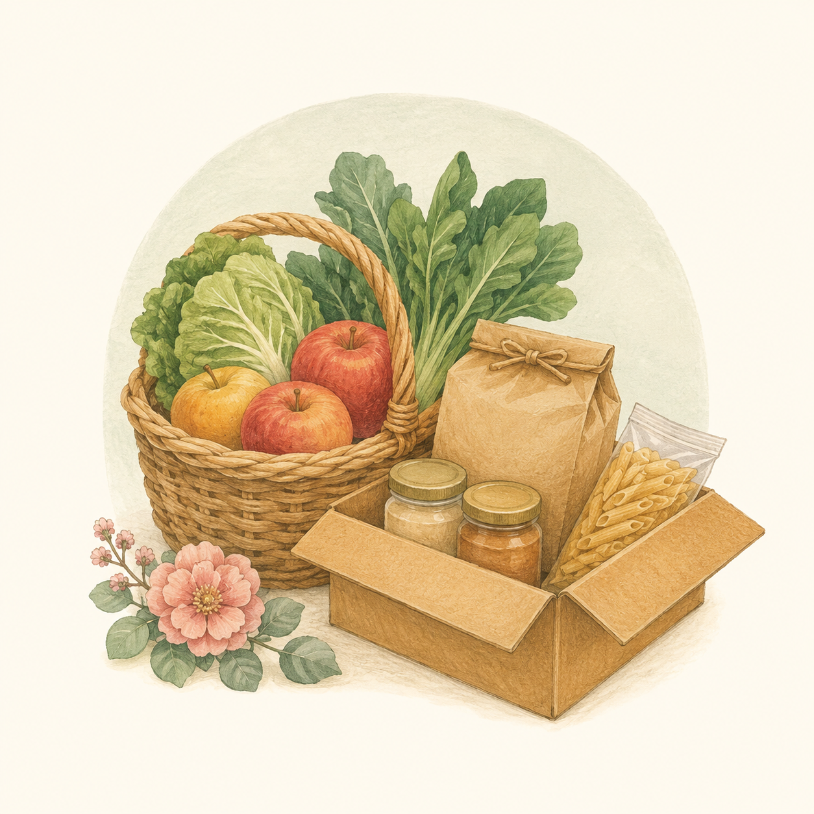

WITH OUR NEIGHBORS
フードバンクの取り組み
地域のみなさまと一緒に、食べ物でつながるあたたかい輪を

ABOUT
フードバンクとは？
食べ物を「もったいない」から「必要な方のもとへ」
「食」でつながる地域の支え合い
フードバンクとは、家庭や企業で使われなくなった食品（賞味期限内で安全なもの）を集め、食べ物に困っている方々や支援を必要とするご家庭にお届けする活動です。
食料の廃棄を減らしながら、地域で助け合う仕組みを作ること。清華保育園は、この大切な活動に保育園として積極的に関わっています。
食品ロスの削減
まだ食べられるのに捨てられてしまう食品を有効活用します。地球にやさしく、もったいなくない社会を目指しています。
困っている方への支援
経済的に苦しいご家庭や、さまざまな事情で食べ物に困っている方々のもとへ、食品を届けます。
地域のつながりを育む
「おたがいさま」の気持ちで助け合う地域づくり。保育園が地域のハブとなって、支え合いの輪を広げます。
PARTNER
由宇町社会福祉協議会との連携
地域の福祉を支える頼もしいパートナー
清華保育園 ×由宇町社会福祉協議会
由宇町社会福祉協議会（社協）は、地域のさまざまな福祉活動を支える公的な団体です。清華保育園は同じ由宇町の仲間として、社協と手を取り合い、地域のフードバンク活動を進めています。
保育園の役割
食品の受け取り場所（寄付窓口）として機能し、地域の方々が気軽に食品を持ち寄れる場所を提供します。集まった食品は社協を通じて必要な方へ届けられます。
社協の役割
集まった食品を必要としている方々へ安全に届けるための管理・配布を担います。地域のニーズをよく知る社協が中心となって運営しています。
ACTIVITY
具体的な活動内容
清華保育園でできること
-
STEP1
食品を寄付する
ご家庭や地域の方から、使い切れなかった食品をお預かりします。保育園の玄関に寄付ボックスを設置しています。
-
STEP2
社協へお届け
集まった食品を由宇町社会福祉協議会へ定期的にお届けします。状態を確認しながら安全に取りまとめます。
-
STEP3
必要な方に届く
社協を通じて、食べ物に困っている地域のご家庭へ食品が届けられます。地域全体で支え合う循環が生まれます。
受け付けている食品の例
 米・乾物（パスタ・乾麺など）
米・乾物（パスタ・乾麺など） 缶詰・瓶詰め食品
缶詰・瓶詰め食品 インスタント食品・レトルト食品
インスタント食品・レトルト食品 お菓子・飲み物（未開封のもの）
お菓子・飲み物（未開封のもの） 調味料（醤油・砂糖・塩など）
調味料（醤油・砂糖・塩など）
- ※ 賞味期限が1か月以上残っているものをお願いします。
- ※ 開封済みのものはお断りしています。
- ※ 生鮮食品（野菜・肉・魚など）はお受けできません。
SUPPORT
ご協力のお願い
あなたの「ちょっとした気持ち」が誰かの笑顔になります
食品を寄付する
「買いすぎてしまった」「使い切れなかった」そんな食品がありましたら、ぜひ清華保育園の寄付ボックスへ。賞味期限内・未開封のものをお持ちください。
受付時間：平日 7:00〜18:00 / 土曜 9:00〜17:00
活動を広めてほしい
「こんな取り組みをしている保育園があるよ」と、ご家族やご近所の方にお伝えいただくだけでも大きな力になります。口コミで地域の輪を広げてください。
食品寄付の受け付け場所
清華保育園 玄関ホール
（寄付ボックス設置）
〒740-1441 山口県岩国市由宇町千鳥ケ丘3丁目1-7
TEL0827-63-1222ご不明な点がございましたら、お電話またはご来園の際にお気軽にお声がけください。
MESSAGE
保育園から地域へ、地域から保育園へ
子どもたちが育つまちを、みんなで守りたい
清華保育園がこの活動に取り組む理由
保育園は、地域の子育て家庭にとって身近な場所です。子どもたちが毎日通うこの場所が、地域のあたたかい支え合いのハブになれたら——そんな思いでフードバンク活動を始めました。
「誰かの困りごとを、誰かが助ける」。この当たり前の助け合いが、子どもたちの目にも映ることで、やさしい心が育まれると信じています。
地域のみなさまのご支援・ご協力を、どうぞよろしくお願いします。